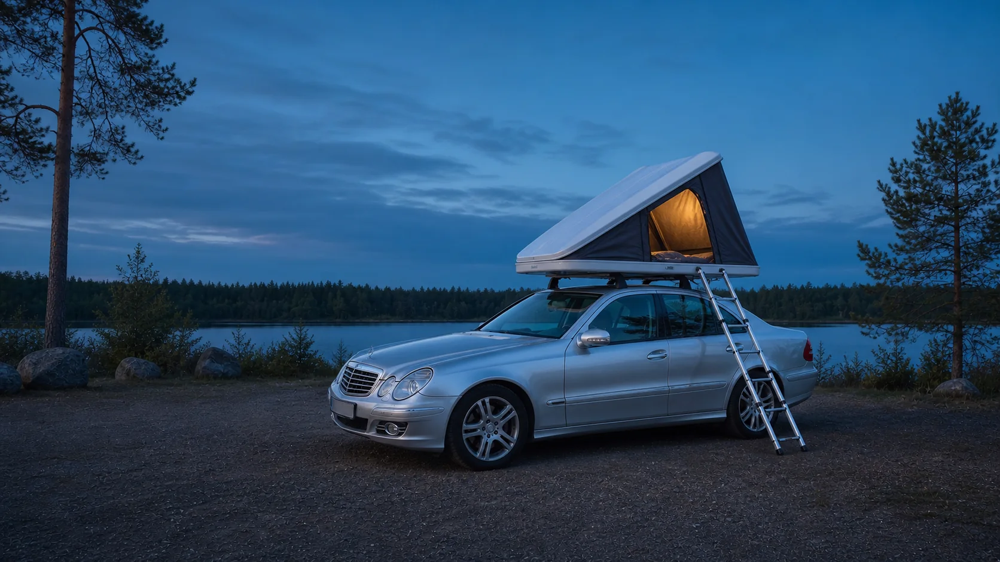
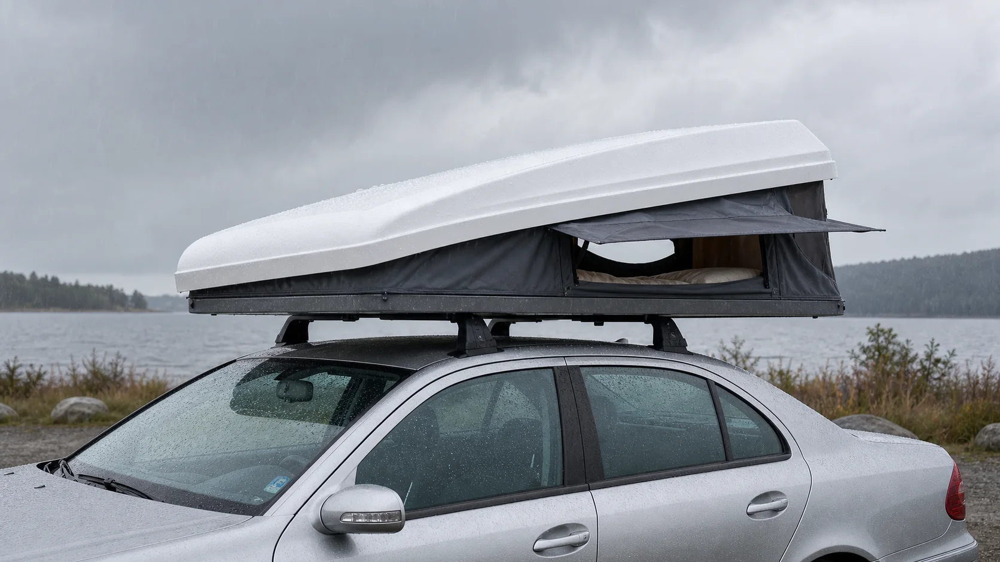
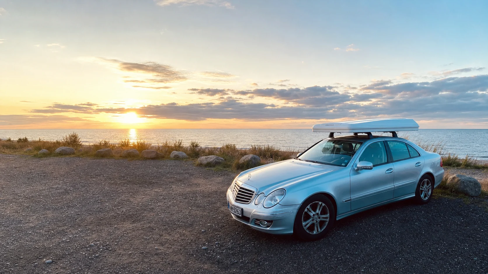

Erlaubnis klären
Eigentum, Beschilderung, Schutzstatus und lokale Regeln vor dem Aufbau prüfen.

Autohome Columbus Variant
Der kompakte Begleiter für Ankunft, Aufbau, eine ruhige Nacht und eine sichere Weiterfahrt.
Field Manual
Die Reihenfolge ist bewusst immer gleich: Ort prüfen, Fahrzeug ausrichten, Umfeld sichern, Zelt öffnen, lüften und morgens vollständig trocken sowie fahrbereit verpacken.
Eigentum, Beschilderung, Schutzstatus und lokale Regeln vor dem Aufbau prüfen.
Feste, möglichst ebene Fläche wählen. Zufahrten, Rettungswege und andere Nutzer freihalten.
Äste, Leitungen, Dachfreiheit und Windrichtung kontrollieren. Nie unter bruchgefährdeten Ästen aufbauen.
Parkbremse setzen, Columbus nach Herstellerablauf öffnen und alle Verriegelungen kontrollieren.
Zelt leeren, trockenlüften, vollständig schließen und vor Fahrtbeginn einmal ums Auto gehen.
01 · Bevor das Dach aufgeht
02 · Autohome Columbus Variant
Parkbremse setzen, Motor aus, Schlüssel sicher verwahren. Kleine Unebenheiten zuerst durch Umparken lösen.
Lose Gegenstände sichern und den vollständigen Öffnungsbereich des Zeltes kontrollieren.
Alle Verschlüsse in der vom Hersteller vorgesehenen Reihenfolge öffnen. Nichts mit Gewalt bewegen.
Gasfedern kontrolliert arbeiten lassen, Stoffbahnen beobachten und nichts einklemmen.
Leiter beziehungsweise Einstieg standsicher einrichten und vor jeder Nutzung belasten und prüfen.
Gegenüberliegende Öffnungen leicht öffnen. Nasse Kleidung möglichst nicht im Schlafraum lagern.
Die Schale öffnet unterstützt. Beim Öffnen und Schließen Stoff, Mechanik und Freiraum im Blick behalten.
Die isolierte Basis ist laut Hersteller als verwindungssteife Sandwichkonstruktion ausgeführt.
Autohome nennt für Airtex eine Wasserdampfdurchlässigkeit von 440 g/m² in 24 Stunden.
Sie unterstützen dabei, die Stoffbahnen beim Schließen sauber nach innen zu führen.
Die verbindliche Bedienung, zulässige Lasten und Verriegelungspunkte ergeben sich aus den Handbüchern von Autohome, Dachträger und Fahrzeug.
03 · Trocken, warm, leise
Frühzeitig geschützter stehen, lose Ausrüstung ins Auto und bei starkem oder böigem Wind abbauen. Ein Dachzelt ist kein Unwetterschutzraum.
Stoff nicht an Gepäck anliegen lassen. Nass verpacktes Zelt bei nächster Gelegenheit vollständig öffnen und trocknen.
Auch bei Kälte querlüften, Matratze morgens anheben und Feuchtigkeit aus Schlafsäcken außerhalb des Zeltes ablüften.
Morgens Schatten einplanen, früh lüften und nie Menschen oder Tiere im geschlossenen Fahrzeug zurücklassen.

04 · Nachts sicher, morgens spurlos
Die beste Lösung entsteht vor dem Schlafengehen: vorhandene Toilette nutzen, den erlaubten Toilettenplatz bei Tageslicht festlegen und eine saubere Nachtlösung griffbereit vorbereiten. Die örtlichen Vorgaben haben immer Vorrang.
Ein körpergerecht geformtes Urinal mit dichtem Schraubdeckel vermeidet den Leiterabstieg. Vorher zuhause testen, nachts im Sitzen benutzen, sofort verschließen und aufrecht in eine auslaufsichere Zweittasche stellen. Morgens in eine reguläre Toilette entleeren und reinigen.
Stirnlampe, feste Schlupfschuhe und Jacke liegen immer am Einstieg. Leiter und Boden trocken sowie frei halten. Erst vollständig wach werden, beide Hände frei lassen und niemals springen. Bei Glätte, Krankheit oder eingeschränkter Mobilität ist ein Urinal die bessere Wahl.
Eine dicht schließende Campingtoilette oder ein stabiler Toilettensitz mit zugelassenem Auffangbeutel gehört auf festen Boden, idealerweise in ein separates Sichtschutzzelt. Inhalt nur nach Produktanleitung und an einer dafür vorgesehenen Entsorgungsstelle entsorgen.
Wo es ausdrücklich zulässig und ökologisch geeignet ist, kann eine einzelne Kotgrube eine Option sein. Viele sensible, stark besuchte, felsige, alpine oder trockene Gebiete verlangen stattdessen das vollständige Mitnehmen in einem Human-Waste-Beutel.
Unkonventionell heißt hier: im Campingalltag weniger üblich, aber bei korrekter Anwendung hygienisch und sicher. Vor der ersten Tour jede körpernahe Lösung zuhause mit Wasser testen und immer eine auslaufsichere zweite Barriere einplanen.
Vor dem Aufbau lokalisieren, Öffnungszeiten prüfen und vor dem Schlafen nutzen.
Dicht, standsicher, diskret und ausschließlich als persönliche Nachtlösung.
Auffangbeutel, Toilettenpapier und Hygieneartikel vollständig wieder mitnehmen.
Toilette nutzen, wenn vorhanden. Sonst vorab bei Schutzgebiet, Kommune oder Flächeneigentümer klären, ob Pack-out vorgeschrieben ist oder eine Kotgrube überhaupt zulässig ist.
Als verbreitete Leave-No-Trace-Faustregel mindestens 60 Meter Abstand zu Gewässern, Wegen, Zeltplatz und Lebensmittelbereich halten. Lokale Vorgaben können strenger sein.
Bevorzugt einen dafür vorgesehenen Human-Waste-Beutel verwenden. Nur wo erlaubt und in organischem Boden geeignet: einzelne, etwa 15–20 cm tiefe Kotgrube ausheben, anschließend vollständig schließen und unauffällig abdecken.
Toilettenpapier, Feuchttücher, Menstruationsartikel und andere Hygieneprodukte in einem blickdichten, dicht verschlossenen Beutel mitnehmen. Nichts verbrennen.
Nur wo Aufenthalt und Betreten zulässig sind: weit weg von Gewässern, Wegen, Gebäuden, Zelt- und Kochplatz eine diskrete, bereits belastbare Oberfläche wählen. Nicht direkt auf empfindliche Pflanzen, Holzbauwerke oder in stehendes Wasser urinieren. Papier und Tücher vollständig mitnehmen.
Nur wenn lokale Regeln sie erlauben, Boden und Nutzung geeignet sind und kein Pack-out verlangt wird. Einzelne Grube in organischem Boden, mindestens etwa 60 Meter entfernt und circa 15–20 cm tief; anschließend sorgfältig schließen. In Fels, Wüste, Permafrost, Strand, Hochgebirge und stark besuchten Gebieten meist ungeeignet.
Human-Waste-Beutel vor der Tour beschaffen, Anwendung einmal trocken üben und nach Benutzung doppelt sowie blickdicht verschließen. Bis zur zulässigen Entsorgung getrennt von Wasser und Lebensmitteln transportieren. Beutel nie in der Natur oder einer Trockentoilette zurücklassen.
Auch Urinieren kann durch örtliche Satzungen, Schutzgebietsregeln oder Eigentumsrecht eingeschränkt sein. „Biologisch abbaubar“ bedeutet nicht, dass Ausscheidungen, Papier oder Feuchttücher am Ort bleiben dürfen.
Nach dem Toilettengang und vor Lebensmitteln mindestens 20 Sekunden mit Seife und sauberem Wasser waschen. Händedesinfektion allein wirkt gegen Noroviren nicht zuverlässig.
Waschwasser ebenfalls weit weg von natürlichen Gewässern verwenden; kleine Mengen biologisch abbaubarer Seife sind kein Freibrief für die Nutzung direkt am Ufer.
Sauberes Wasser, Lebensmittel und Kochzeug getrennt von Toilettenkit, Abfallbeuteln und Chemietoilette lagern.
Die Maßangaben sind verbreitete Outdoor-Faustregeln aus den verlinkten US-Leitlinien, keine pauschale Rechtsregel für Europa. Vor Ort gelten Eigentumsrecht, Schutzgebietsregeln und behördliche Vorgaben.
05 · Fahrzeug zuerst
06 · Leave no trace
Schlafraum räumen, Matratze prüfen und Feuchtigkeit abführen.
Stoff nach innen führen, Einklemmen verhindern und Verschlüsse vollständig sichern.
Müll, Essensreste und auch fremden Kleinstmüll mitnehmen. Keine Spuren und keine Feuerstelle hinterlassen.
Dach, Reifen, Fahrzeugumfeld und freie Abfahrt kontrollieren.

Herstellerwissen · visuell erklärt
Die Videos stammen direkt vom offiziellen Autohome-Kanal. Sie ergänzen den Guide, ersetzen aber weder die zum Modell gehörende Anleitung noch die Vorgaben von Fahrzeug und Dachträger.

Form, Öffnungsprinzip und Nutzung des Hartschalen-Dachzelts im offiziellen Produktvideo.

Das innere elastische Spannsystem unterstützt beim geordneten Schließen der Schale.

Die offizielle Funktionsdarstellung der Gasfeder-Sicherung. Bei starkem oder böigem Wind bleibt Abbauen die sichere Wahl.
Technikangaben: Autohome, abgerufen im Juli 2026. Vor der Nutzung immer die aktuelle, zum eigenen Modell gehörende Anleitung prüfen.
Gemeinsam besser werden
Teile einen konkreten Praxistipp zum Columbus oder zum verantwortungsvollen Dachzeltreisen. Neue Beiträge werden vor der Veröffentlichung geprüft.
Freigegebene Community-Tipps werden geladen …
Auf diesem Gerät gespeichert
0 von 0 erledigt